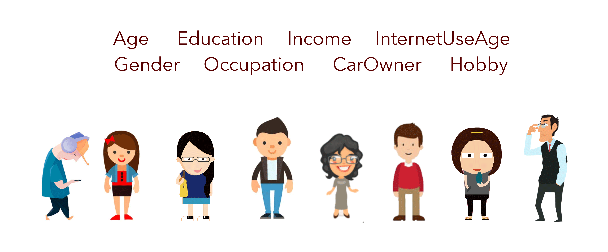
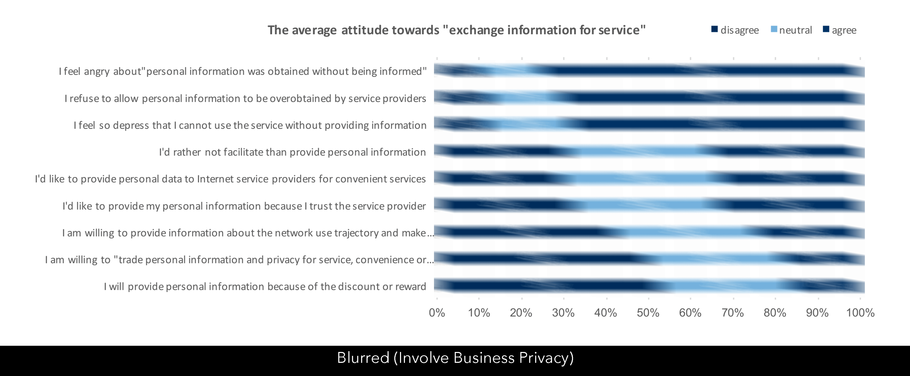

Focus Group is the 3rd part of total project, I join this part as host of the interview and focus group. And through the interview we verify the former survey results and compare attitude&willingness of different pesonas.
Focus Group · Host
May 2018 - April 2019
The project aims to dig out real feedback of users in cardrive-related scenarios while providing private information.
The first stage of project collects thousands of users' privacy willingness and cognition, combining the results of the research. we compile a num ber of use-case stories that are highly relevant to private information.
The second stage of project mainly bases on the use-case stories, through interviews and additional survey, we foucus on 8 scenarios and enrich them as Focus Group backgroud stories.
Focus Group is one special method of User Research Interviews, the participants dividually represants one kind of User. The host lead the participants into discussions about the use-case stories, and the Recorder collect attitudes and willingness of participants.
Usually, in a Focus Group we can see different types of users' caucus on single problem, and the host throws more issue for further discussion while the recorder collects the information.
We want to find out if the participants' feedback is consistent with previous survey results, and also specailized personas delegate's attitude and willingness.
Since the recruitment, we filter users by Income, Age, Car-Owning, Consume Willingness and so on. Then we divide the testee into 8 groups, to keep the balance of 8 different persona in each group.
During the interview, the recorder collect every participants' attitude on the questions and their responses in the caucus. After the interview, we watch the video again to supplement the missing information.
As the host, I will complete the ice-breaking process as soon as possible and guide everyone into the discussion. After each opinion, I will also select the participants with special positions to speak and spark the discussion.
The host should not express opinions during the discussion, I need to avoid cold spots and activate the caucus or insert a tea break when the atmosphere is poor..
Participants can be classified into groups easily by the recruitment labels, but after the Interview we should carry out more convincing and detailed personas.
According to the classification, we can conclude exact information of each personas' attitude and willingness of Service-Related Privacy. In addition, we can sort out their typical comment and response during the interview.
After the accounting and concentration, we've got 8 personas corresponding to different attitude. In general, we have mainly 9 attitudes of "exchange information for service".
According to personas' response and the mainly attitude of "Service and Information", we carry out Service Provider with suggestions on Privacy Limit and Use-Case Private Information Policy.